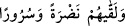
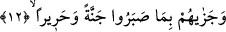

11) “İşte bu yüzden” Allah’tan korkmaları ve O’ndan korunmaları sebebiyle “Allah
onları o günün şerrinden korur.” Allah Teâlâ onları kıyâmet gününün kötülük, zorluk,
dehşet ve azâbından muhâfaza eder. Sahih bir hadiste bizlere şöyle haber verilmektedir:
“Ömründe hiç sevap işlememiş bir adam âile fertlerine: «Öldüğüm zaman beni yakın.
Sonra küllerimin yarısını karaya yarısını denize atın. Allah Teâlâ -eğer beni
diriltmeye gücü yeterse- bana dünyada hiç kimseye azap etmediği şekilde azap etsin»
der. Bu kişi öldüğünde âilesi, vasiyetine uygun olarak dediğini yapar. Allah karaya
emreder, oradaki küllerini toplar. Sonra denize emreder, oradaki parçalarını toplar.
Ardından; «Niçin böyle yaptın?” diye sorar. O kişi: «Senin korkundan ya Rab, Sen de
bunu en iyi bilensin» der. Bu söz üzerine Allah Teâlâ, kendisinden bu denli korkması
sebebiyle o kişiyi bağışlar.” [217]
Hadiste yer alan “Allah eğer kadir olursa” ifâdesinin mânâsı; “Eğer O’nun kudreti
ölüleri diriltme gününde benim vücûduma taalluk ederse diriltip azap etsin”
takdirindedir. Fakat o zavallı kişi, âilesine vasiyet ettiği şekilde fânî olduğunda
imkânsız zümresine dâhil olacağını, Allah’ın kudretinin ise muhâle yetişmeyeceğini
zannetmişti. Böyle bir zan ise küfrü gerektirmez. “Küllerin karadan ve denizden
toplanması” ifâdesi ise “kıyâmet günü bedeninin aslî parçalarının bir araya getirilmesi”
şeklinde tefsir olunmuştur. Bahsedilen olayın berzah âleminde geçmesi de mümkündür.
Çünkü -hak mezhebe göre- berzah hayatında insan ruh ve cesediyle sorguya çekilecektir.
Günahkârların çatık çehrelerine ve hüzünlerine karşılık “onlara” onların yüzlerine
“parlaklık ve” kalplerine “sevinç verir.” “Nadra” kelimesi tazelik, güler yüz; “sürûr”
kelimesi de kalplerde sevinç ve ferahlık olarak tefsir edilmiştir.
Müfredât’ta “lakkâ” kelimesinin kökü herhangi bir kimseyi “karşılamak” şeklinde
açıklanmakta ve “__WORD__ âyeti örnek gösterilmektedir. Tâcu’l-masâdir’de ise
kelime “bir şeyi bir kimsenin önüne yeniden getirmek” olarak îzâh edilmektedir.
12. Sabretmelerine karşılık onlara cenneti ve (cenetteki) ipekleri lutfeder.
İbâdet ve tâatların meşakkatlerine, nefislerinin kötü arzularını bir kenara atmanın ve
haramlardan kaçınmanın zorluklarına ve malları fakirlere vermeyi tercih etmenin
sıkıntılarına “sabretmelerine karşılık onlara cenneti” yâni diledikleri her nimeti yiyip
içecekleri bahçeyi “ve” giyip süslenecekleri “ipekleri lutfeder.” Yâni ipekten cennet
elbisesi giyerler. Onlardan her birine bunları, bir mükâfat ve karşılık olmak üzere verir.
Bir hadis-i şerifte şöyle buyrulur: “Sabır dört çeşittir. Birden başa gelen beklenmedik
felâketlere karşı sabır, farzları edâ etmeye sabır, haramlardan kaçınmaya sabır ve